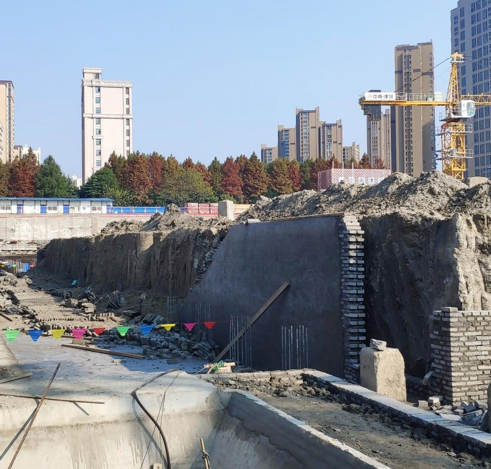

盐城市盐南高新区体育中心游泳馆工程“12·7”坍塌事故调查报告
2019年12月7日10时左右，位于盐城市盐南高新区的体育中心游泳馆工程在施工过程中，发生一起砖胎模坍塌事故，造成2人死亡，直接经济损失约336.65万元。近日，盐城市应急管理局公布此起坍塌事故调查报告。
一、事故发生工程概况及相关单位情况
（一）工程基本情况
盐城市盐南高新区体育中心游泳馆工程位于盐南高新区解放南路西、蓝海路北。该项目为盐南高新区政府投资项目，项目资金来源为国有自筹，预计总投资20707万元。该项目建设单位为盐城市城南新区开发建设投资有限公司，具体由原盐南高新区建设二局（经机构设置调整，现为盐南高新区规划编研与城建服务中心）负责该项目的日常建设管理；原盐南高新区建设一局（经机构设置调整，现为盐南高新区住房和建设局）是该项目的政府监管部门；施工总承包单位为江苏中南建筑产业集团有限责任公司；监理单位为盐城市工程建设监理中心有限公司。该项目于2019年4月29日取得原盐南高新区建设一局核发的《建筑工程施工许可证》（建设项目编码：3209051802240101，施工许可编号:320905201904290101），并于2019年5月开工建设，目前处于基础施工阶段。
（二）事故发生相关单位概况
1.工程建设单位。盐城市城南新区开发建设投资有限公司（以下简称：城南开发投资公司），成立于2007年7月16日，注册及办公地址：盐城市人民南路38号新龙广场6号楼；法定代表人朱鸿根；注册资本1000000万元；统一社会信用代码：913209006649081188。经营范围：房地产开发经营；城市基础设施投资、经营、管理；政府授权的国有资产的经营与管理；城市规划区内的土地开发经营；城市基础设施开发建设；物业管理等。盐南高新区体育中心游泳馆工程项目实际建设管理单位原盐南高新区建设二局为盐南高新区管委会内设行政单位，主要职责为负责全区政府投资和代建的重大项目基础设施建设的具体组织与实施；负责全区市政道路、园林绿化建设的组织实施和养护工作；负责区内公交、燃气、自来水、强弱电、排污和城市防洪。
2.工程总承包单位。江苏中南建筑产业集团有限责任公司（以下简称：中南建筑集团公司），成立于2001年10月8日，注册地址：江苏省南通市海门市常乐镇，法定代表人胡红卫；注册资本800000万元整；统一社会信用代码：91320684735704017Y。经营范围：建筑工程设计；公路工程施工总承包；市政公用工程施工总承包；起重设备安装工程专业承包；防雷工程设计、施工；建筑设备租赁、维修；园林绿化工程施工等。该公司具有建筑工程施工总承包特级资质、市政公用工程施工总承包壹级资质。《安全生产许可证》编号（沪）JZ安许证字〔2005〕060380；许可范围为建筑施工；有效期至2022年8月19日。公司下设10个区域公司，其中总承包公司负责江苏、安徽两省范围内工程建设项目管理。2019年11月24日，中南建筑集团公司总承包公司内部成立苏北分公司，负责盐城市及周边城市的工程项目管理。
3.工程分包单位。
（1）海门市展丰建筑劳务有限公司（以下简称：海门展丰公司），成立于2017年5月18日，位于南通市海门市王浩镇浩盛路1199号，法定代表人倪佳丽，注册资本1098万元，社会统一信用代码：91320684MA1P18W10T。经营范围：建筑劳务分包；建筑装修装饰工程专业承包；市政公用工程施工。
（2）江苏中杰高空建设有限公司（以下简称：中杰高空公司），成立于2006年07月17日，位于盐城市迎宾北路二区1#楼303室，法定代表人胡义琴，注册资本7966万元整，社会统一信用代码：91320900789923098L。经营范围：防水防腐保温工程、环保工程、钢结构工程、房屋建筑工程、建筑装修装饰工程施工；管道安装防腐；人防工程、隧道防水堵漏工程施工等。该公司具有防水防腐保温工程专业承包壹级资质。《安全生产许可证》编号：（苏）JZ安许证字〔2007〕090537；许可范围为建筑施工；有效期至2022年9月22日。
4.工程监理单位。盐城市工程建设监理中心有限公司（以下简称：盐城监理中心）成立于1997年12月26日，位于盐城市盐南高新区黄海街道东进中路89号现代化庭6幢201室，法定代表人陈云德；注册资本600万元；统一社会信用代码：913209131401504818。经营范围：房屋建筑工程、市政公用工程、公路工程、人民防空工程、水利工程建设监理；工程招标代理；项目管理；工程咨询；工程造价咨询。该公司具有房屋建筑和市政公用工程监理甲级资质。
（三）工程发包、分包情况
2019年3月18日，城南开发投资公司与中南建筑集团签订《建设工程施工合同》，合同约定：工程建设内容为盐城市城南新区体育中心游泳馆工程及室外平台施工，合同价为2.07亿元，承包方项目经理为冒宏飞。
2019年6月5日，中南建筑集团与中杰高空公司签订《建设工程施工专业分包合同》，将盐南高新区体育中心游泳馆（含室外平台）防水工程分包给中杰高空公司，合同价326万元，合同约定中南建筑集团现场代表为龚华，中杰高空公司现场代表为戴朝学。
2019年6月25日，中南建筑集团与海门展丰公司签订《建设工程劳务分包合同》，将盐南高新区体育中心游泳馆混凝土施工劳务分包给海门展丰公司，合同暂定总价224万元，并明确中南建筑集团现场代表为龚华；海门展丰公司授权委托人为沈少灵，负责常驻项目现场。
（四）项目监理情况
2018年9月5日，城南开发投资公司与盐城监理中心签订《城南体育中心体育馆及游泳馆工程监理服务合同》。监理范围包括:施工阶段的工程质量、进度、造价、合同、信息、安全管理，协调建设相关方的关系。2019年5月，盐城监理中心监理部进场监理，薛冬担任项目总监。
（五）现场勘查情况
经现场勘查：发生事故位置在盐南高新区体育中心游泳馆工程比赛池（内墩2）北侧，该比赛池池底比北侧地下室底高约2.8米，四周采用深沉搅拌桩进行加固。为便于地下室侧墙板砼浇筑，施工单位在比赛池深层搅拌桩重力坝外侧四周均采用砖砌地胎模。砖胎模长50米、宽25米、高2.8米、厚240毫米。比赛池东、南侧砖胎模已砌筑粉刷完成；西侧已砌筑完成高度1.4米；北侧已砌筑粉刷完成42米左右。坍塌的地下室砖胎模位于比赛池北侧，坍塌砖胎模长约38米（坍塌情况见下图）。该事故现场于事故当日下午2时许被中南建筑集团公司组织施工人员清理。

二、事故发生经过、应急救援及善后处理情况
（一）事故发生经过及救援情况
2019年12月７日上午，海门展丰公司按照中南建筑集团公司游泳馆工程项目部施工计划，安排龚得奇和邵汉新两名施工人员在比赛池底进行平土，并对砖胎模与比赛池深层搅拌桩重力坝间约30厘米～50厘米的间隙进行土方回填；中杰高空公司安排徐友华、朱新芹、蔡学军、刘荣庄、杨仁英等5人对比赛池北侧己砌筑粉刷结束的地下室砖胎模进行防水卷材施工作业（具体位置为比赛池北侧砖胎模基础以上1米及北侧地面、防水沟）,刘荣庄、杨仁英等2人负责比赛池北侧砖胎模的北侧地面，按由东向西的顺序依次进行防水卷材粘贴施工作业。当日上午10时05分许，防水作业施工至砖胎模自东向西15米左右处时，比赛池北侧的砖胎模突然发生倒塌，致使刘荣庄和杨仁英两人被倒塌的砖胎模砸倒，并被埋于倒塌的砖胎模下面，其中：刘荣庄全身被砖头覆盖；杨仁英侧躺在地面，面朝下，胸部以下被砖块覆盖。事故发生后，现场人员立即开展救援，中南建筑集团游泳馆工程项目部工程部经理杨新乐拨打“120”救援电话，“120”急救车随即将两名伤者送盐城市第一人民医院（南院）救治，后经抢救无效，于事故当日两人先后死亡。事故发生时，中南建筑集团公司未按规定流程向住建部门及应急部门上报事故信息，原盐南高新区建设二局安监站韩士学、袁伟伟等人员正在对游泳馆工程项目安全生产工作进行检查，事故发生后随即前往事故发生地点并向所在单位负责人报告了事故情况。
（二）善后处理情况
事故发生后，原盐南高新区建设一局、建设二局、盐南高新区安环办及盐城市公安局盐南高新区分局新都派出所等部门、单位迅速派员赴事故现场查看情况，并协助中南建筑集团总承包公司开展事故善后处理，安抚、稳定死者亲属情绪。2019年12月8日晚，中南建筑集团公司与死者家属达成赔偿协议，善后处理工作结束。
三、事故造成的人员伤亡和直接经济损失
（一）死亡人员基本情况
事故共造成2人死亡：
1.刘荣庄，防水工。男，1963年8月16日出生，公民身份号码：320911196308XXX，住江苏省盐城市盐都区大冈镇戴伙村三组74号。
2.杨仁英，防水工。女，1967年8月10日出生，公民身份号码：320911196708XXX，住江苏省盐城市盐都区尚庄镇程实村二组1号。
（二）直接经济损失
该起事故造成直接经济损失约336.65万元。
四、事故发生的原因和事故性质
（一）直接原因
施工作业人员在砖胎模砌筑砂浆尚未满足强度要求的情况下，违规对砖胎模与搅拌桩重力坝之间的缝隙进行土方回填。作业过程中未采取分层分段方式回填，亦未对砖胎模墙体采取临时加固等安全防护措施，致使砖胎模受回填土方的挤压，造成侧压力增大，稳定性降低，从而导致事故的发生。
（二）间接原因
1.中南建筑集团公司安全生产主体责任不落实、施工现场管理混乱。在实施土方回填作业前，违反《建筑地基基础工程施工规范》（GB51004—2015）第3.0.2条第4款、第4.1.5条及第8.5.8条第一款的规定，未对砖胎模的稳定性进行影响分析，未编制土方回填专项施工方案,施工现场统一协调管理不力。对施工人员安全教育培训流于形式，土方回填作业前未进行安全技术交底。日常安全检查不到位，未及时发现并消除施工现场土方回填与防水施工交叉作业中的安全隐患，是发生这起事故的主要原因。
2.海门展丰公司施工现场安全管理缺失。在砖胎模外墙防水施工尚未完成、施工人员未接受安全技术交底的情况下，安排施工人员实施土方回填作业。现场安全检查不到位，未及时发现施工现场土方回填与防水施工交叉作业中的安全隐患，也是发生这起事故的主要原因。
3.盐城监理中心施工现场安全监理不到位。对施工单位实施土方作业前未编制土方回填专项施工方案，未对砖胎模的稳定性进行影响分析、施工工序混乱、未进行安全技术交底等情况检查不到位。
4.城南开发投资公司对建设项目安全管理职责没有履行到位。该公司没有实质性介入建设项目管理，没有依法履行建设单位的安全管理职责。
5.原盐南高新区建设二局对安全工作统一协调管理存在疏漏。未能有效督促指导施工单位、监理单位加强土方回填施工作业管理。
（三）事故性质
经事故调查组调查认定，盐城市盐南高新区体育中心游泳馆项目“12·7”坍塌事故是一起一般生产安全责任事故。
五、属地相关监管部门（单位）履责情况
原盐南高新区建设一局是盐南高新区建筑行业的监管部门，其下属单位安监站具体负责辖区内建设项目的安全监管工作。
经查，原盐南高新区建设一局自2019年初以来与各有关单位签订了安全管理目标责任书，先后组织召开全区建设管理暨作风建设会议、建筑工程安全生产工作会议并常态化召开月度工作
例会，分析研判建筑工程安全生产形势，督促落实企业主体责任和危大工程安全监管。印发各类安全大检查、综合大检查、安全专项检查、安全隐患排查等相关文件二十余份，并在春节、五一、中秋、国庆以及夏季高温、汛期、台风等重要节点时段及时部署和组织开展安全检查工作；认真吸取响水“3.21”事故教训，督促指导辖区内各建设项目紧扣安全工作重点和施工关键环节，采取针对性措施做好安全工作。
该局安监站能按照《住房城乡建设部关于印发<房屋建筑和市政基础设施工程施工安全监督规定>的通知》（建质〔2014〕153号）等相关文件规定,积极开展安全检查和专项整治工作，针对各受监项目实际情况，及时编制《施工安全监督工作计划》，并组织项目各方主体召开安全监督方案告知和交底会议，先后四次组织开展关键岗位人员到岗履责、施工后期安全管理、动火作业管理、集中生活区消防安全管理等专项整治。能突出春节、五一、国庆、高温等重大节日、重要时段，安排专人对重点项目进行督查，先后七次组织召开现场安全例会，通报并分析安全生产工作。其中，对游泳馆项目现场督查十余次，下发各类整改通知书5份。
综上，原盐南高新区建设一局及其安监站安全生产监管职责总体履行到位，但该局安监站在对游泳馆建设项目现场安全监督中也存在一定不足，未能有效督促建设、施工、监理等工程建设各方责任主体加强岗位安全生产责任制的落实，对施工现场违规实施土方回填作业监督检查不到位。
六、事故责任分析和处理意见
（一）事故相关责任人的处理建议
1.杜帅帅，男，海门展丰公司现场负责人。未认真履行安全管理职责，在砖胎模外墙防水施工尚未完毕、施工作业人员未接受安全技术交底的情况下，安排人员进行回填土作业，对事故的发生负有主要责任，涉嫌构成刑事犯罪，建议由公安机关立案侦查。
2.吴荣华，男，海门展丰公司瓦工班组长。根据该公司现场负责人要求安排人员进行回填土作业，违反了施工作业安全管理规定，对事故的发生负有次要责任，建议由海门展丰公司按照公司内部管理规定予以处理。
3.沈少灵，男，海门展丰公司总经理。负责常驻项目现场，未正确履行安全生产管理职责，对盐南高新区游泳馆工程劳务项目安全生产工作疏于管理，隐患排查治理工作不到位，对事故的发生负有主要领导责任，建议由盐城市应急管理局依法给予行政处罚。
4.杨新乐，男，中南建筑集团公司游泳馆工程项目部工程部经理。对施工现场管理不到位，涉嫌在未对砖胎模的稳定性进行影响分析、未编制土方回填专项施工方案、砖胎模外墙防水施工尚未完毕的情况下安排展丰公司进行土方回填施工，对事故的发生负有主要责任，涉嫌构成刑事犯罪，建议由公安机关进一步立案侦查。
5.刘敏华，男，中南建筑集团公司游泳馆工程项目部安全员，未正确履行安全管理职责，安全教育培训流于形式，隐患排查治理工作不到位，未能发现施工作业人员在无土方回填专项施工方案、砖胎模外墙防水施工尚未完毕、未接受安全技术交底的情况下，违规进行回填土作业。对事故的发生负有次要责任，建议由盐城市应急管理局依法给予行政处罚。
6.吴昌会，男，中南建筑集团公司游泳馆工程项目部执行经理，未正确履行安全管理职责，未能全面落实岗位安全生产责任，对施工现场安全生产工作检查不到位，对事故的发生负有主要领导责任，建议由盐城市应急管理局依法给予行政处罚。
7.冒宏飞，男，中南建筑集团公司游泳馆工程项目部项目经理，未正确履行安全管理职责，未能全面落实安全生产责任，对项目安全管理工作组织不力，对事故发生负有主要领导责任，建议由盐城市应急管理局依法给予行政处罚，并由盐城市住建局依法依规予以处理。
8.陆伟，男，中南建筑集团公司苏北分公司生产副总经理，负责苏北分公司的生产、安全管理工作。未正确履行安全管理职责，隐患排查治理工作不全面细致，对游泳馆工程项目安全生产工作督导不到位，对事故的发生负有重要领导责任，建议由中南建筑集团公司按内部管理规定进行处理。
9.李云峰，男，中南建筑集团公司苏北分公司总经理，负责苏北分公司全面工作。未正确履行安全管理职责，对游泳馆工程项目安全生产工作督导不到位，对事故的发生负有重要领导责任，建议由中南建筑集团公司按内部管理规定进行处理。
10.张涛，男，中南建筑集团公司副总裁，分管总公司安全工作，未正确履行安全管理职责，对苏北分公司安全生产工作检查指导不到位，对事故的发生负有重要领导责任，建议由中南建筑集团公司按内部管理规定进行处理。
11.李振兴，男，中南建筑集团公司总裁，负责总公司全面工作，未正确履行安全管理职责，对苏北分公司安全生产工作督导不到位，对事故的发生负有重要领导责任，建议由盐城市应急管理局依法给予行政处罚。
12.熊健生，男，盐城监理中心监理部土建专监。负责监理范围内的安全监理工作，未正确履行安全监理工程师职责，对盐南高新区游泳馆工程项目施工现场检查不到位，未能及时发现该项目违规实施回填土作业的问题，对事故的发生负有责任，建议由盐城市住建局依法依规予以处理。
13.薛冬，男，盐城监理中心监理部总监理工程师，未正确履行总监理工程师职责，对安全监理工作督促检查不到位，对事故的发生负有责任，建议由盐城市住建局依法依规予以处理。
14.杨习军，男，盐城监理中心总经理，负责公司全面工作。未正确履行安全管理职责，对监理部安全监理工作督导不到位，对事故的发生负有责任，建议由盐城市住建局依法依规予以处理。
15.卞建圣，男，原盐南高新区建设二局工作人员，游泳馆工程项目现场负责人。未正确履行安全管理职责，对游泳馆工程项目的安全管理工作统一协调管理不到位，对施工现场安全检查不够全面细致，对事故的发生负有责任，建议由盐南高新区规划编研与城建服务中心对其诫勉谈话。
16.杨春生，男，原盐南高新区建设二局副局长，分管房建工程建设。未正确履行安全管理职责，对游泳馆工程项目安全管理工作督导不到位，对事故的发生负有责任，建议由盐南高新区纪工委对其诫勉谈话。
17.王朝阳，男，原盐南高新区建设二局局长，负责该局全面工作。未正确履行安全管理职责，对游泳馆工程项目安全管理工作督导不到位，对事故的发生负有责任，建议由盐南高新区纪工委对其提醒谈话。
18.袁伟伟，男，原盐南高新区建设一局安全监督站工作人员，负责游泳馆工程项目安全监管工作。未正确履行安全监管职责，对工程项目现场安全监督检查不到位，对事故的发生负有责任，建议由盐南高新区住房和建设局对其诫勉谈话。
19.韩士学，男，原盐南高新区建设一局安全监督站工作人员，负责游泳馆工程项目安全监管工作。未正确履行安全监管职责，对工程项目现场安全监督检查不到位，对事故的发生负有责任，建议由盐南高新区住房和建设局对其诫勉谈话。
20.朱鸿根，男，城南开发投资公司法定代表人，负责公司全面工作。未能依法履行建设单位的安全管理职责，对事故的发生负有领导责任，建议由市住建局对其进行安全生产警示约谈。
21.高尚德，男，原盐南高新区管委会副主任，负责分管原盐南高新区建设二局。对建设项目安全管理工作督导不到位，建议由市住建局对其进行安全生产警示约谈。
（二）事故相关责任单位的处理建议
1.海门展丰公司。安全生产主体责任落实不到位，未严格执行安全生产管理制度，日常安全教育培训和隐患排查治理工作不到位，违规实施回填土作业，对事故的发生负有主要责任，建议由盐城市应急管理局依法给予行政处罚。
2.中南建筑集团公司。施工现场统一协调管理不力，施工安全技术措施不落实，施工工序混乱,砖胎模外墙防水施工尚未完毕即部署土方回填。对施工人员安全教育培训流于形式，土方回填作业前未进行安全技术交底。日常安全检查不到位，未及时发现并消除施工现场违规实施土方回填作业行为，是发生这起事故的主要原因，同时尚存在未对事故现场进行保护及未按规定流程上报事故信息的问题，建议由盐城市应急管理局依法给予行政处罚，并由盐城市住建局对该公司法定代表人、董事长、总裁进行安全警示集体约谈。
3.盐城监理中心。对施工现场安全检查不细致，未能及时发现施工单位岗位安全生产责任制不落实、施工现场违规进行回填土作业等问题，建议由盐城市住建局依法予以行政处罚。
4.城南开发投资公司。履行建设单位安全管理职责不到位，建议责成该公司向盐南高新区管委会作书面检查。
5.盐南高新区规划编研与城建服务中心。对游泳馆工程项目的安全管理工作统一协调管理不到位，对该项目安全管理工作督促检查不到位，建议责成其向盐南高新区管委会作书面检查。
6.盐南高新区住房和建设局。对工程建设项目安全生产责任制落实及事故隐患排查治理工作开展情况监督检查不够全面细致，建议责成其向盐南高新区管委会作书面检查。
七、事故防范和整改措施
（一）严格落实施工单位安全生产主体责任。中南建筑集团公司和海门展丰公司要认真吸取此次事故教训，建立健全安全生产责任制，切实将安全责任细分到每个岗位，常态化开展日常考核。要严格执行施工作业技术管理规范，认真开展从业人员安全教育培训和安全技术交底工作，切实按规范进行施工作业。要严格施工现场安全管理，加强施工现场安全管控措施的落实，认真开展事故隐患排查治理，及时发现并消除事故隐患。要切实加强事故应急管理，规范事故信息上报，增强事故现场保护意识。
（二）要切实强化施工项目安全监理工作。盐城监理中心要认真履行建设工程监理工作职责，严格按照监理规划落实安全监理管理制度，认真组织对施工现场的巡视检查，加强施工现场的工序控制，加强施工现场巡视检查力度，认真检查施工过程安全技术措施落实情况，严格监督施工单位隐患排查治理工作，及时纠正施工单位违规施工行为。
（三）要切实加强建设项目的统一协调管理。盐南高新区规划编研与城建服务中心作为项目建设管理单位要强化对盐南高新区体育中心游泳馆项目安全生产工作的统一协调管理，及时督促施工单位和监理单位认真履行安全工作职责，认真分析、检查施工作业存在的安全风险、隐患，督促施工单位按照安全生产“一必须五到位”的要求，加强事故隐患排查治理，切实保障工程建设安全。城南开发投资公司作为项目建设单位，要对照安全生产法律法规，依法开展项目建设安全管理工作，将建设单位安全管理职责履行到位。
（四）要严格建设项目的安全监管。盐南高新区管委会要严格落实属地监管责任，进一步依法理顺项目建设各方责任主体，切实采取有效措施强化对辖区内建筑施工项目的安全监管，保障在建工程项目的安全有序实施。盐南高新区住房和建设局要按照安全生产“三管三必须”的要求，进一步加强建筑施工领域安全监管工作。督促指导建设、施工、监理等建设工程各方责任主体落实好安全生产责任制。要根据工程不同阶段的安全工作特点，认真开展专项整治工作，督促施工单位严格执行施工作业规范，认真落实各项安全技术措施，细致排查和整改各类事故隐患，加大对施工现场的检查深度，加大各类安全生产违法违规行为处罚力度，保障安全生产形势的稳定好转。
原文编辑: EHS资讯
原文链接: https://ehsinfo.cn/2020/07/17/盐城体育中心游泳馆工程坍塌事故调查报告.html
版权声明: 转载请注明出处(必须保留作者署名及链接)